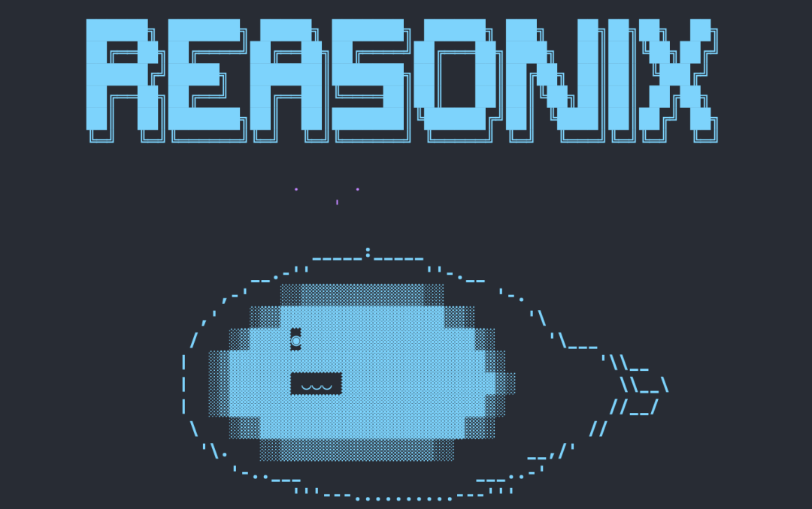
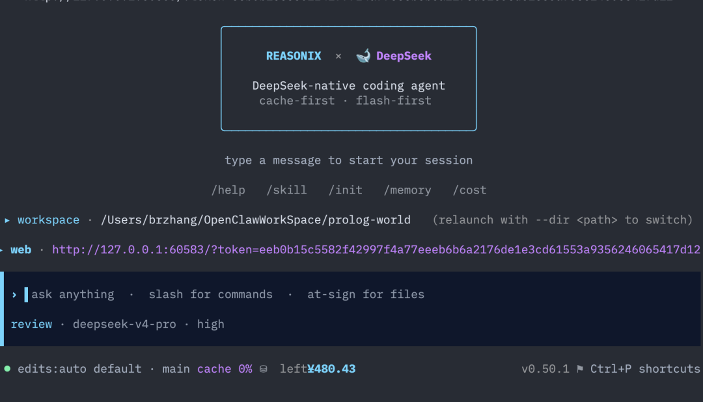
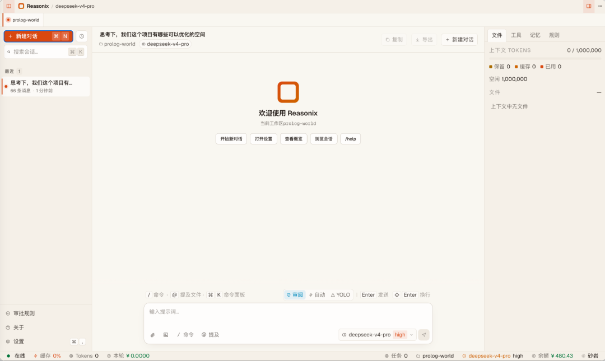

你可能会问，市面上的 AI 编程工具已经多到产生选择焦虑了——Cursor、Claude Code、Aider、Copilot——为什么还需要一个新的？

再说一个你可能没意识到的事实。
你用 Claude Code 写一天代码，API 账单大概在 $15-30。这不是因为 Anthropic 贵，是因为每次请求，你的 system prompt、工具定义、对话历史都要原封不动重新传一遍。 模型每次都从零开始"读"你的上下文，而你为这些重复传输的字节付了全价。
DeepSeek 有个机制叫前缀缓存（Prefix Cache）：如果两次请求的前缀字节完全一致，缓存部分只收 ~10% 的费用。这个机制在 API 文档里只有一行，大多数 agent 框架根本没当回事。
Reasonix 把它当成了架构的第一性原理。


读完它的源码和架构文档后，我的判断是：这不是又一个"套壳" agent，这是一个把 DeepSeek 的成本优势压榨到极限的工程艺术品。
先说一个反直觉的事实，最好的编程 agent 不是"最聪明的"，我认为是是"最省钱的"那种
先看一组真实数据（来自 Reasonix README 的 case study）：
真实用户，单日（2026-05-01）：4.35 亿 input tokens，99.82% 缓存命中，实际花费 ~$12。 同样的 workload 如果没有缓存命中，需要 ~$61。
4 亿 token 花 12 美元。你感受一下。
这背后是一个简单的算术题：DeepSeek V4-Flash 的缓存命中价是 $0.014/百万 token，缓存未命中价是 $0.14/百万 token。10 倍的差价。
Claude Code 没有这个机制——不是因为 Claude 做不到，是因为 Anthropic 的定价模型没有为缓存做如此激进的设计。Cursor 也没有——因为它的后端是多模型的，无法为单一 provider 做深度优化。
这就是 Reasonix 最核心的取舍：故意只支持 DeepSeek。 不是做不到多 provider，是不做。绑死一个后端，把它的缓存机制吃干榨净——这不是技术限制，是产品策略。
三根支柱：读完架构文档我服了
Reasonix 的整个循环围绕着三根支柱构建。我逐一拆解。
Pillar 1：缓存优先循环——"上下文分区"这个想法简单得像天才
问题的本质是：LLM API 的前缀缓存要求两次请求的前缀字节完全一致。大多数 agent 框架每轮都重写 system prompt、重排工具定义、插入时间戳——缓存命中率实际不到 20%。
Reasonix 的解法是把上下文切成三块：
┌─────────────────────────────────────────┐
│ IMMUTABLE PREFIX │ ← 整个 session 不变 │ 缓存命中候选
│ system + tool_specs │ │
├─────────────────────────────────────────┤
│ APPEND-ONLY LOG │ ← 单调增长 │ 保留前面轮次的缓存
│ [assistant₁][tool₁]... │ │
├─────────────────────────────────────────┤
│ VOLATILE SCRATCH │ ← 每轮重置 │ 从不发送给 API
│ R1 思考 / 临时计划 │ │
└─────────────────────────────────────────┘关键不变量：
• Prefix 在整个 session 里只算一次，哈希后钉住，永不变。 • Log 只能追加，不能改写。 这就是为什么 Reasonix 不支持"编辑历史消息"——那不是 UI 限制，是缓存不变量。 • Scratch 是模型内部的思考草稿，在发送下一轮请求前被蒸馏提炼，提炼后的信息才进 Log。
这解释了 README 里那句看似凡尔赛的话："缓存稳定不是开关，而是循环要围绕设计的不变量。"
你再想想——为什么 Claude Code 不支持"一直开着"？因为它的对话历史每轮都在变，缓存根本用不上，开着就是烧钱。Reasonix 的设计让挂着不关在经济上是可行的。
还有一个细节：并行工具派发。read_file、search_content、web_search 这类只读工具声明了 parallelSafe: true，循环会把连续的并行安全调用打包成一个 chunk，Promise.allSettled 并发执行。互斥工具（写文件）充当串行屏障——读写顺序不被破坏。这个优化在 4.35 亿 token 的 workload 里省了多少轮次，自己去品。
Pillar 2：工具调用修复——四个 pass，专治 DeepSeek 的"小毛病"
如果你用过 DeepSeek API，你可能遇到过这些情况：
• 模型把 tool call JSON 塞进了 reasoning_content（<think>标签里），忘了在正式的tool_calls字段里暴露• 参数多了就漏字段 • 同一个工具用同样的参数反复调用（call-storm） • JSON 被 max_tokens截断，半截丢给 parser
Reasonix 在收到模型响应后跑四个修复 pass：
这四个 pass 是纯工程——没有 AI 魔法，就是正则、状态机、去重哈希。但合在一起，它们让 DeepSeek V4-Flash 在工具调用场景下的可靠性和 V4-Pro 打平了。
Pillar 3：成本控制——这个项目的"会计"比"AI"做得好
v0.6 引入的成本控制系统有四个机制，我把最妙的两个挑出来说。
层级默认（flash-first）：
Preset Model Effort Cost
flash v4-flash max 1×
auto（默认） v4-flash → v4-pro on fail max 1–3×
pro v4-pro max ~12×默认走 flash。所有辅助调用——摘要压缩、subagent spawn、截断修复重试——硬编码 flash + effort=high，不管你设了什么 preset。 用一个 pro 模型去"把工具结果总结成两句话"？不存在的。
故障信号自动升级：
循环计算每轮的"flash 在挣扎"信号：edit_file 的 SEARCH 找不到、tool-call repair 被触发。攒够 3 个信号，该轮剩余部分自动切到 pro，同时在 TUI 头部亮一个红色的 ⇧ pro escalated 标记。不是静默升级——你永远知道什么时候在花 pro 的钱。
轮末自动压缩：
每个工具结果超过 3000 token 的，在轮次结束时压缩到上限以下。模型在本轮内看到了完整结果，后续轮次只看到摘要，需要时可以 read_file 重读。一次额外的文件读取远比重拖 12KB 穿过每一轮提示便宜。
这些设计背后是一个简单的价值观：省的钱比省的事重要。
真实案例：4.35 亿 token = $12
回到那个 case study。4.35 亿输入 token，99.82% 缓存命中。我们来算一笔账：
• 缓存命中：435M × 99.82% × 6.08 • 缓存未命中：435M × 0.18% × 0.11 • 输出 token（估算）：~$5.80 • 总计：~$12
同样的 workload，如果没有缓存命中：435M × 60.90。
这就是 5 倍的差距。 而且这不是理论测算，是真实用户单日数据。
为什么会有人一天用掉 4 亿 token？因为 Reasonix 的设计理念是"leave it running"——挂着不关。长 session 下，Append-Only Log 积累了数百轮上下文，但由于 prefix 不变，每一轮的缓存命中都接近 100%。
这就是这个项目最颠覆的地方：它不追求单轮推理能力的极致（那是 Claude Opus 的事），它追求"长时间运行的总成本最优"。
横向对比：为什么选它，为什么选别的
如果你每天写 2-4 小时代码，Reasonix 的日均成本在 $5-15，Claude Code 在 $15-40。如果你挂着不关、让 agent 在后台持续工作，Reasonix 的成本优势会进一步放大——因为缓存命中率随 session 长度趋近 100%。
但 Reasonix 明确说了它不是做什么的：IDE 集成、追 hardest reasoning benchmark、多 provider、完全离线免费——都不是。如果你在做 PhD 级别的证明题，Claude Opus 还是更稳。如果你是"修个 auth bug + 加个 API endpoint + 重构三个文件"，Reasonix 的经济学最优。
它还有一个桌面版、QQ 通道和 Dashboard
Reasonix 在 CLI 之外还 ship 了一个基于 Tauri 的桌面客户端（预发布），多标签页，右侧面板展示 agent 已读/已编辑的文件，底部实时显示成本、缓存、token 数据。
QQ 通道是它的一个独创功能——把当前 session 延伸到 QQ 上，你可以在手机上通过 QQ 消息继续和 agent 交互，回复会回到 QQ。不是独立的新运行模式，就是当前 session 的远程 I/O 扩展。
内嵌的 Web Dashboard 实时展示缓存命中率、成本曲线、session 摘要——这些在 Claude Code 和 Cursor 里都是缺失的。你做 AI 编程，总得知道自己花了多少钱吧？
这个项目给我带来的思考是，AI 编程工具的竞争，已经从"谁更强"变成了"谁更便宜"
2024 年，AI 编程工具的竞争维度是：谁的模型推理能力更强？谁支持的语言更多？谁的补全更快？
2025-2026 年，模型能力趋同了。DeepSeek V4-Flash 在绝大多数编码任务上和 Claude Opus 的差距已经不是一个数量级的差距那么大了。当"智商"不再是差异化因素，成本就成了核心变量。
Reasonix 的聪明之处在于：它没有试图做一个"更好的 AI"，它做了一个"更会省钱的会计"。它把系统 prompt 钉死、工具定义钉死、对话历史只追加不改写——所有这些设计决策的背后，都是一个相同的目标：让同一笔钱，买更多的有效工作时间。
这让我想起 AWS 的叙事转变——早年在讲"我们有最多的服务"，后来在讲"我们帮你省钱"。Reasonix 做的就是 AI 编程工具领域的这个叙事转变。
我觉得，谁该用 Reasonix
• 重度终端用户：你的工作流就是 tmux + neovim + git，不需要 IDE 集成，终端就是你的 IDE。 • 成本敏感的个人开发者：API 账单是自掏腰包，不是公司报销。省一块是一块。 • 长 session 工作者：你早上打开终端，晚上关掉——中间 agent 一直在工作。缓存命中率是你最好的朋友。 • DeepSeek 生态用户：你已经在用 DeepSeek API，想找一个最懂这个后端的 agent。
谁不该：
• 你需要 IDE 深度集成（补全、行内提示、右键菜单）→ Cursor • 你在做极其复杂的单次推理任务 → Claude Code • 你需要完全免费/离线 → Aider + Ollama
写在最后
npx reasonix code，回车，粘贴 DeepSeek API key。就这么简单。
没有环境变量配置，没有 yaml config，没有 provider adapter。它的 onboarding 是一个 TUI 向导，问你要 key，持久化到 ~/.reasonix/config.json，然后就开始了。
我觉得一个工具的门槛越低，它的设计就越自信。Reasonix 不需要你"先读完文档再开始"——你可以先用起来，遇到有意思的功能（skills、hooks、MCP）再深挖。
因为它赌的不是你一次性的好奇心，是你长期使用的经济理性。
8.1k 人已经 star 了。我猜你也不会等了。